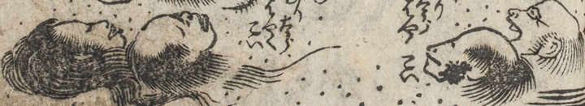

転がる生首が無理太郎を見上げ「はやくこい」「はやくこい」と呼びかけている。血が付いたままの首もある。もやがかかっている。
著作者：式亭三馬作・豊國画／出典：親書誌：U426_nichibunken_0450：淺草觀音利益仇討雷太郎強惡物語／日付：2021／資源識別子：U426_nichibunken_0450_0005_0004
Copyright (c)2010- International Research Center for Japanese Studies, Kyoto, Japan. All rights reserved.